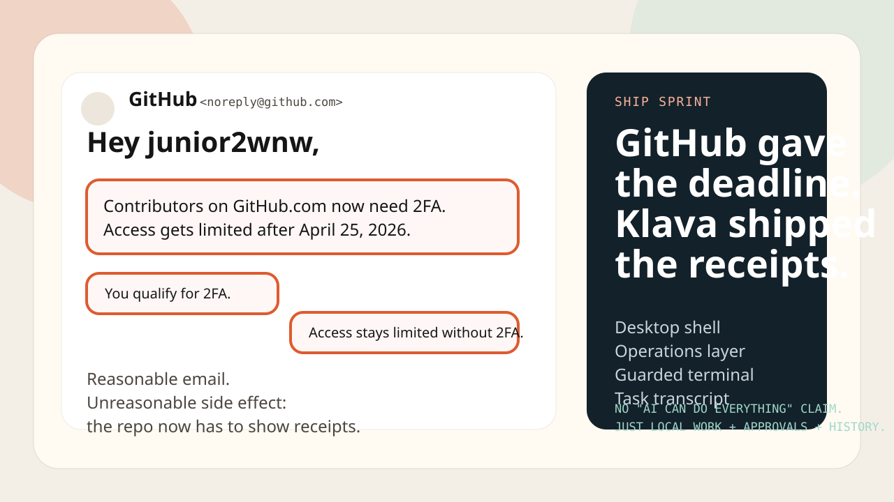

A better launch hook
GitHub gave the account a 2FA deadline, so this repo had to prove itself.
The useful part of the 2FA email is not drama. It is pressure. Klava now has to justify attention with a real desktop shell, a local runtime, explicit approvals, durable operations, and task-attached history.
Current proof
What Klava actually ships
- desktop shell
- local runtime API
- multi-step operations in Pro
- guarded terminal plus approvals
- task transcript and support bundles
The claim
No fake "AI can do everything on your computer" line.
The stronger and safer claim is narrower: Klava is becoming a local-first operations layer for long machine tasks that need notes, approvals, shell work, and a transcript that survives after the run.
The challenge
Bring your ugliest local workflow.
The best kind of hype is a public queue of painful real tasks. If your machine workflow is too stateful or risky for a plain chat box, put it in the challenge issue template.